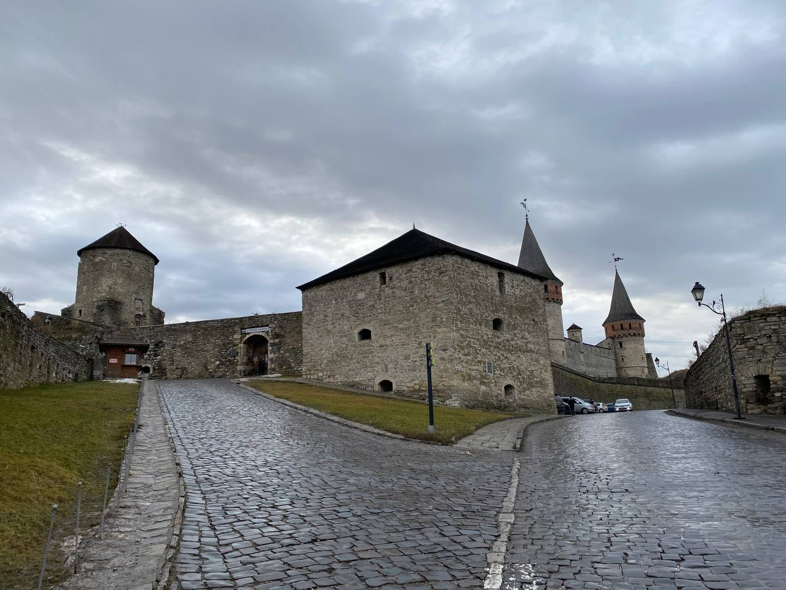

Kamianets-Podilskyi fortress is a fortress in the city of Kamianets-Podilskyi ( Khmelnytskyi region of Ukraine ). It has been known since the 14th century as part of the defense system of the city of Kamianets , the former capital of the Podilsk principality in the 14th - 15th centuries, the Podilsk voivodeship in the 15th - 18th centuries, and then the Podilsk province ( 1793 - 1925 pp.). The fortress is an integral part of the Kamianets National Historical and Architectural Reserve , which belongs to the "7 Wonders of Ukraine".
| City and Region | Coordinates |
|---|---|
| Kamianets-Podilskyi, Khmelnytskyi region | 48°40`24″N 26°33`45″E |